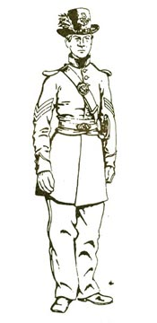

|
 |
 |
 |
|
| |
| |
| FORT
TEJON |
| AND
CALIFORNIA IN THE CIVIL WAR |
| by
Sean T. Malis State Park Interpreter I |

|
California
and the rest of the Pacific and Southwest
played an important and largely ignored role
in securing the region for the Union during
the Civil War. When discussing the War in
the Pacific, I often encounter the opinion
that "nothing happened
in the Pacific States." I've even been
told, "The Civil War in California?! California
wasn't even a state!" Wrong! Since statehood
(September 9, 1850), Californians had formed
many a volunteer and militia company, mostly
in the northern part of the State to combat
a perceived Indian threat. These militia units,
along with the Regular Army, helped to form
a sense of order and authority in a new state
with a rapidly expanding citizenry resulting
from the "Gold Rush."
In Lincoln's initial call for 75,000 volunteers
to quell the secessionist uprising in the
South, the State of California was not asked
to supply any troops. But by July 24, 1861,
California was asked to provide one regiment
of infantry and five companies of cavalry
to guard the overland mail. A second request
for California volunteers was sent on August
14, 1861. This request was responsible for
the 2nd through 5th Infantry, and the 2nd
Cavalry Regiments. In 1863, and again in
1864, further calls produced three more infantry
regiments, and a battalion of native (Californios)
cavalry from the Santa Barbara and Los Angeles
areas. All total, California provided 17,500
troops for the Union, more troops per capita
than any other state.
Early in the war, California
Volunteers in Federal service helped to take
over responsibilities from the Regular Army
that was being recalled to the East. Californians
served along the entire western coast from
Washington Territory to the Mexican state
of Sonora, and campaigned as far east as
Utah and Texas and throughout New Mexico
and Arizona Territories. The Californians
primary enemy was the Indian and the environment.
They did meet and close with Confederate
troops in the Southwest as part of the "California
Column." The California Volunteers served
their country from July, 1861 to January,
1867, when the last troops were mustered
out of service.
|
| |
THE
2ND INFANTRY REGIMENT |
From
the August, 1861 request for troops, the
2nd California Volunteer Infantry was formed.
Colonel Francis J. Lippitt was appointed
as commander of the regiment. Lippitt had
been a member of Stevenson's 1st New York
Volunteers that came to California in 1846
to help wrest California away from Mexico
in the Mexican-American War.
The 2nd Regiment was first organized at
the Presidio in San Francisco. After
completing its organization, five companies
were sent to Northern California, Oregon
and Washington Territory to relieve Regular
troops, while two companies were sent
to Santa Barbara. Most of the companies
were organized from San Francisco, Cal.
and Carson City, Nev., with the earliest
enlistments having been made on September
2, 1861.
Company G was first organized on September
21, 1861, at a meeting held in the theater
at Angels Camp, Cal., by Captain William
W. Stuart. On October 9, 1861, the company
arrived in San Francisco where more men
joined, the company being officially
mustered into service on November 29,
1861. Company G spent the next month
in camp at Camp Sumner at the Presidio,
moving to Alcatraz Island on December
20, 1861. On March 8, 1862, Company G
set sail for Crescent City on board the
steamer Oregon. Upon reaching Crescent
City, the company marched to Fort Ter-Waw
and then to Camp Lincoln where it would
remain until being ordered to report
to Benicia [near San Francisco] on June
16, 1863.
At Benicia, Company G traded its old M/1816
converted smoothbores for new M1855/1861
Springfield rifles. The company remained
at Benicia for two months until it received
orders to march southward through the San
Joaquin Valley to Camp Babbitt in Visalia,
on August 12, 1863. On its march south,
the company passed through Camp Stanford
and Fort Miller, now under Lake Millerton
near Fresno.
Company G reached Camp Babbitt on August
28, 1863, where it was garrisoned for just
over three months, and then was ordered
to Fort Tejon, arriving there on January
16, 1864, one day after Company B.
Company B was first mustered into United
States service on September 5, 1861 in
San Francisco, Cal. The company remained
in San Francisco only a short time before
being shipped to Washington Territory on
September 17, 1861. In Washington Territory,
the company concerned itself with Indian
trouble until July 31, 1862 when it arrived
back in San Francisco. The company was
sent to Alcatraz Island for only 3 days
before being sent to Fort Humbolt in Northern
California on August 3, 1862.
Company B was engaged in chasing after
Indians in Klamath and Humbolt counties
for almost a year. Their scouting missions
took them through the most rugged of terrain
and the company was employed in hacking
out a 15 mile road through this wilderness.
On June 15, 1863 the company sailed on
the steamer Panama for Benicia, where the
company was rearmed and refitted before
marching for Fort Miller in route to Fort
Tejon. The company marched 60 miles from
Fort Miller to Camp Babbitt in only two
days, arriving at the latter on December
30, 1863. Company B finally arrived at
Fort Tejon on January 15, 1864 after marching
140 miles in six days.
|
FORT
TEJON |
Fort
Tejon was founded in 1854 on Grapevine
Creek, 17 miles from its originally intended
location on Tejon Creek. Maj. Donaldson
of the 1st U.S. Dragoons selected the site
for the new Fort at its present location
because of the ready availability of water,
fuel and forage. Originally called Camp
Canada de las Uvas for the wild grapes
in the area, it was officially christened
Fort Tejon, (Tejon meaning Badger in Spanish),
over the objection of Brevet Lt. Col. Benjamin
L. Beall, 1st Dragoons, who suggested "Fort
Le Beck," after a trapper who had
been killed by a bear there.
The primary purpose of the garrison at
Fort Tejon was to protect and control
the Indians on the Sebastian Indian Reservation,
and to control the major north-south
road through Grapevine Canyon. Fort Tejon
was garrisoned by various companies of
the 1st Dragoons, and briefly from late
1857 to 1858 by a detachment of the 3rd
Artillery, serving as infantry. In December,
1856, the regimental headquarters of
the 1st Dragoons was moved from Fort
Union, New Mexico Terr., to Fort Tejon,
where it remained until the post was
abandoned on June 15, 186 1.
The rapidly expanding war in the eastern
United States forced the government to
recall the Army to the new seat of hostilities
as fast as possible. This need for troops
back in the East along with a growing fear
of prosecessionist activities in the Los
Angeles and San Bernardino areas, ultimately
forced the closure of Fort Tejon.
|
| FORT TEJON AND THE CIVIL
WAR |
As
discussed above, much of the Californians'
time was concerned with battling the so-called
Indian menace. In 1863, it was deemed necessary
to reoccupy Fort Tejon. On July 24, 1863,
Fort Tejon was regarrisoned by Companies
D and G of the 2nd California Cavalry under
the command of Capt. James M. Ropes.
The 2nd Cavalry reactivated Fort Tejon
with approximately 300 Paiute Indians camping
near the Post. When the Paiutes were forcibly
marched from the Owens Valley by the 2nd
Cav., they numbered 1000, a third of them
being sent to Fort Tejon. The Indians were
kept in a camp down Grapevine Canyon from
the Fort called the "Pot Holes." After
the arrival of the 2nd Infantry, the garrison
provided the Paiutes with a meager ration
to keep them in place and to keep them from
starving [which the Volunteers were not supposed
to do; Capt. Schmidt satisfied headquarters
by deeming the rations for "Prisoners
of War".]
The government Indian Bureau agents refused
to assume responsibility for their care.
As the two Infantry companies settled into
their new home, their time was occupied
at repairing and maintaining the Fort's
buildings that had fallen into disrepair
during the two years that the post had
been abandoned. There were frequent patrols
mounted from the Fort to keep track of
unruly whites and to maintain control over
the Paiutes encamped nearby. There were
always duties to perform in the garrison
relating to the maintenance of the Fort.
There was wood to be hauled and cut, rations
to be prepared, inspections and endless
drills on the parade ground. In short,
Army life.
Life at Fort Tejon was dismal to say the
least. 1st. Sgt. Curtis Greenleaf, Co.
G, complained in his journal that Fort
Tejon was worthless because the local town
was devoid of a whorehouse. Of some intrigue,
however, Pvt. James Anderson of Co. B,
was murdered one evening while returning
from a night out in town. The investigation
turned up one James Conrad, Co. G, as a
suspect, but the subsequent court martial
could not confirm guilt.
Company G left Fort Tejon on June 4, 1864
for Drum Barracks in Wilmington. Fort Tejon
would finally be closed when Company B
left the post on September 11, 1864, ending
the last period of military occupation
of the Post, lasting from 1854 to 1864.
After serving at Fort Tejon, Companies
B & G
were ordered to Arizona Territory, from
August, 1865 until March 31, 1866. The
two companies were mustered out at the
Presidio, San Francisco, May 10, 1866.
|
| UNIFORMS OF THE 2ND INFANTRY |
When the War broke out,
the State of California had no plan for providing
its volunteers with uniforming and equipment.
In fact, the State's adjutantgeneral could
not even account for the arms and equipment
that had been issued to the pre-war militia
organizations. The Federal government had
to open up its Arsenal at Benicia to the
California Volunteers.
This evidence, along with photographs of
California Volunteers, would suggest that
the 2nd Infantry wore the standard regulation
Federal uniform.
A letter from the quartermaster at Camp
Babbitt asking what to do with surplus
property of the 2nd Infantry lists:
• Metallic Scales, mostly broken o Knapsacks, M1858
• Tin canteens and cloth straps, M1858
• Haversacks
Some of these items would suggest that
the regiment had the full dress uniform
at Fort Tejon.
|
| SOME PERTINENT LEADERS
IN 1864 |
Fort
Tejon Garrison |
Post
Com'd'r |
Capt. John C. Schmidt (Co. B) |
| Co. G Commander |
l st Lieut. John E. Hill |
Government Officials
| Governor of Calif. |
Frederick F. Low (Repub.; `63- ) |
| State Senators |
James A. McDougall (Douglas
Dem.; `61-) |
| |
John Conness (Union Dem., `63-) |
|
| SOURCES |
Eldredge,
Zoeth S., History of California, 1914.
Kibbe, William C., Adjutant-General. Annual
Report Of The Adjutant General Of The State
Of California. 1861-65,1862-1866.
Orton, Brig. Gen'l. Richard H., Records
Of California Men In The War Of The Rebellion,
1861 To 1867., 1890. Rodgers, Fred B. "Early
Military Posts of Del Norte County," California
Historical Society Quarterly, Vol. XXVI,
1947
Stammerjohan, George, Fort Tejon State
Historic Park, A Short Interpretive History,
1993.
Stammerjohan, George, State Historian II.
Numerous conversations and readings of
his monographs.
|
| |
|
| |
|
|
|
|
|
 |
|
 |
|
|
|
 |
|
 |
|
 |
|
 |
|
 |
|
 |
|
 |
|
 |
|
 |
|
 |
|
 |
|
 |
|
 |
|
|
|
|